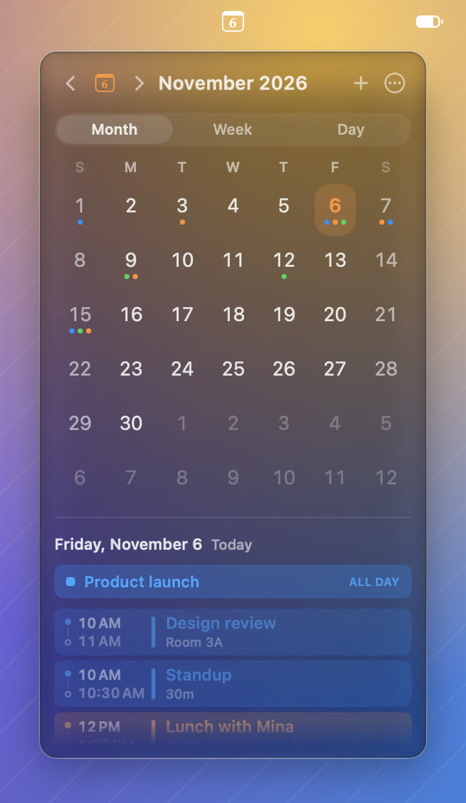
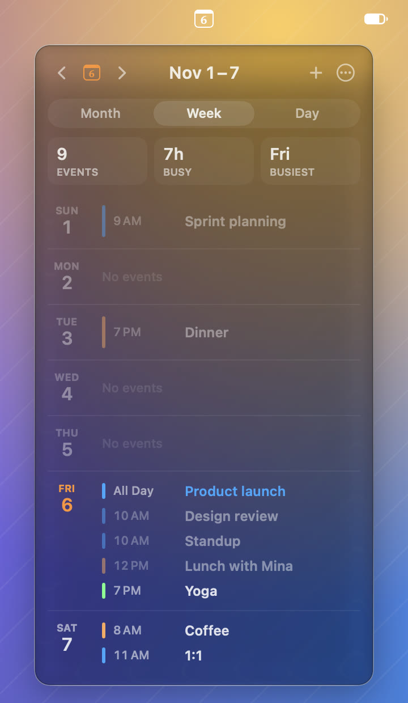
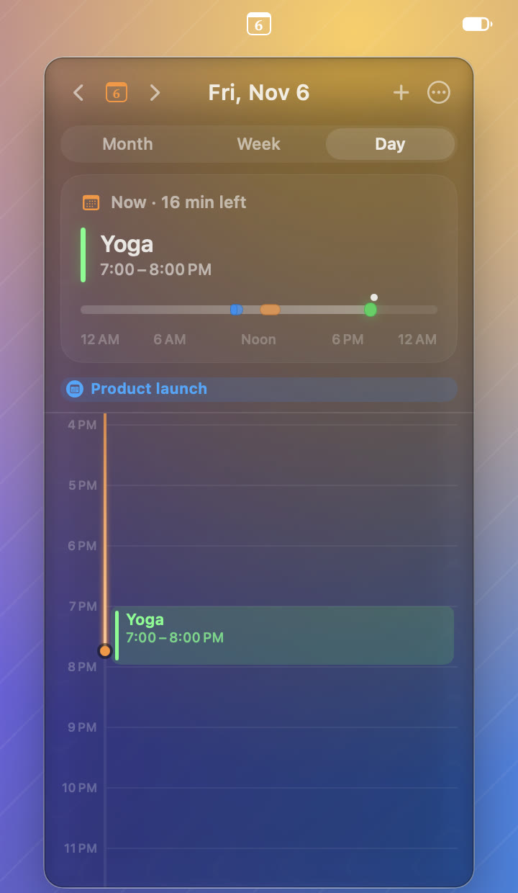
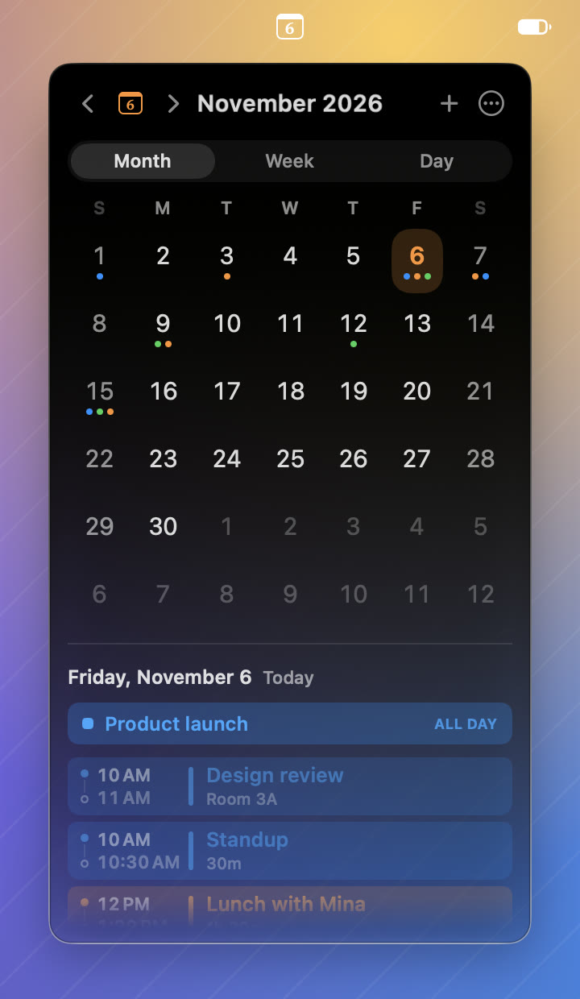
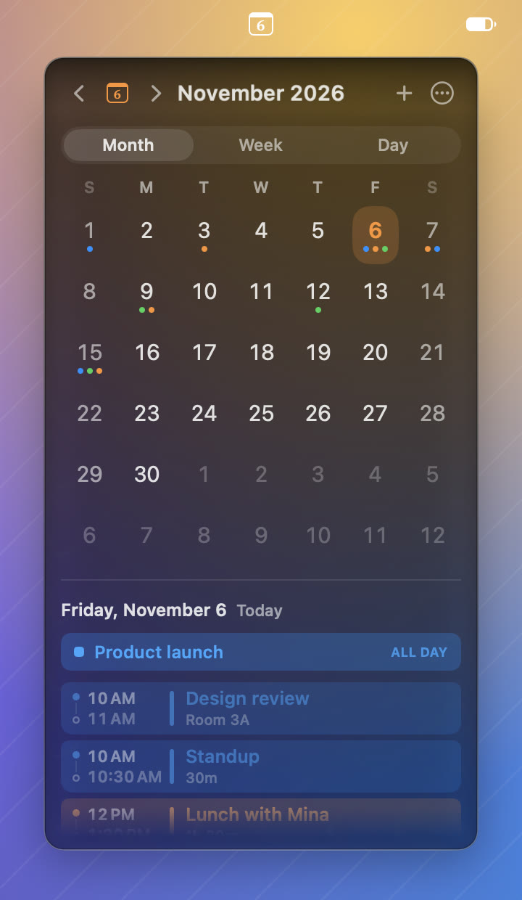
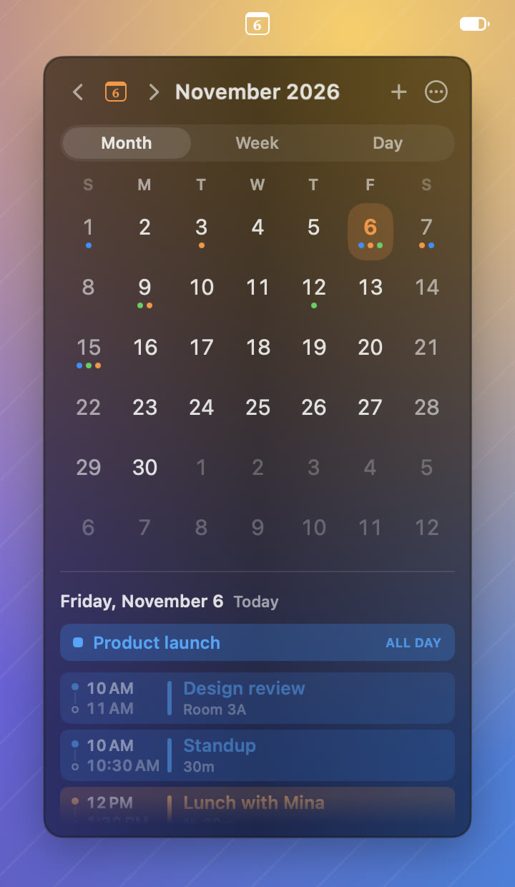
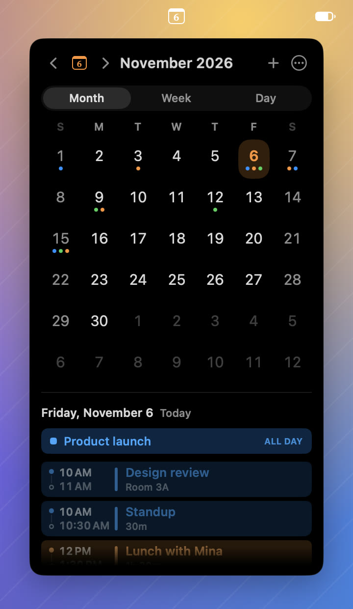
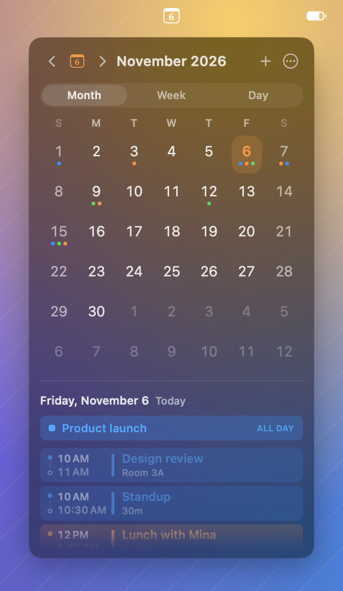
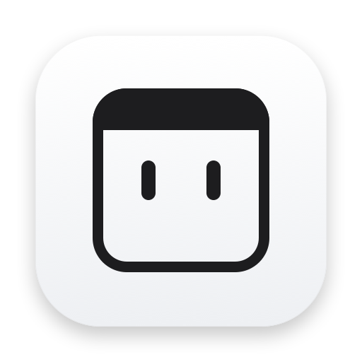

Three ways to see your time
Swipe, scroll or use the arrow keys to page through months, weeks or days. The panel resizes to fit each view.
The whole month, with a dot in each calendar’s colour on the days that have events, holidays marked, and the selected day’s agenda underneath.
Your week as a list, with what it adds up to: how many events, how many hours you’re busy, and which day is the busiest.
What’s next in large type, and the whole day as one strip with a marker for now. Point at an event to light it up, click it for the details.



Six looks for the panel
Pick one in Appearance, with a live preview of each, and choose the colour that marks today.





Small, and out of the way
Minical has no window and no Dock icon. It’s the date in the menu bar until you click it.
Your calendars
Events come from the Calendar app, so iCloud, Google, Exchange and anything else you’ve added there just show up. Choose which calendars appear.
Add events in place
Press ⌘N or the + button, or double-click a time on the timeline. Click any event to open it in Calendar.
Private by design
Your calendar stays on your Mac. Minical runs in Apple’s App Sandbox and has no accounts, analytics or tracking.
Keeps itself current
Checks for a new version once a day and installs it when you say so. You can also check from the ⋯ menu.
Starts with your Mac
Turn on Launch at Login and the date is there every morning. Set the first day of the week to suit you.
Signed and notarized
Built with an Apple Developer ID and checked by Apple, so it opens without a warning.
Keyboard first
Open the panel and everything is a key away.
- ←→↑↓
- Move the selected day
- ⌘←/⌘→
- Previous or next month, week or day
- DWM
- Day, week or month view (or ⌘1, ⌘2, ⌘3)
- T
- Jump to today
- ⌘N
- New event
- Return
- Open Calendar
Install in a minute
Download
Get the disk image and open it.
Drag to Applications
Drop Minical on the Applications folder beside it.
Open it
The date appears in your menu bar. Allow calendar access when asked, so your events show up.
Minical needs macOS 14 Sonoma or later and runs natively on Apple silicon and Intel Macs. Liquid Glass is at its best on macOS 26 Tahoe; on earlier versions it falls back to frosted glass. The interface is in English; a Korean translation is on the way.

Minical
Free, for macOS 14 or later.